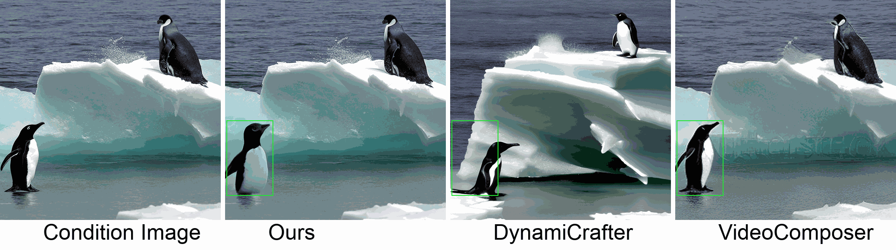

Abstract
In this paper, we introduce a new challenging task called Zero-shot Controllable Image-to-Video Animation, where the goal is to animate an image based on motion trajectories defined by the user, without fine-tuning the base model. Primary challenges include maintaining consistency of background, consistency of object in motion, faithfulness to the user-defined trajectory, and quality of motion animation. We also introduce a novel approach for this task, leveraging diffusion models called Img2VidAnim-Zero (IVA0). IVA0 tackles our controllable Image-to-Video (I2V) task by decomposing it into two subtasks: 'out-of-place' and 'in-place' motion animation. Due to this decomposition, IVA-0 can leverage existing work on layout-conditioned image generation for out-of-place motion generation, and existing text-conditioned video generation methods for in-place motion animation, thus facilitating zero-shot generation. Our model also addresses key challenges for controllable animation, such as Layout Conditioning via Spatio-Temporal Masking to incorporate user guidance and Motion Afterimage Suppression (MAS) scheme to reduce object ghosting during out-of-place animation. Finally, we design a novel controllable I2V benchmark featuring diverse local- and global-level metrics. Results show IVA0 as a new state-of-the-art, establishing a new standard for the zero-shot controllable I2V task. Our method highlights the simplicity and effectiveness of task decomposition and modularization for this novel task for future studies.
Method
Middle: To handle various atomic tasks in controllable I2V, we integrate different task-specific modules. We apply gated self-attention layers as the control module for generating out-of-place motion, while using temporal-attention layers as the motion module for in-place motion animation.
Right: We introduce Motion Afterimage Suppression (MAS), which uses object size and IoU to decide whether to inpaint the background with additional grounding tokens. This approach aims for enhanced inpainting quality with reduced afterimage hallucination.
Visualization


